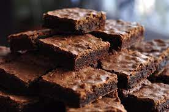

Ingredientes:
-5 colheres de manteiga
-3 xicara de achocolatado
-12 colheres de farinha de trigo
-3 ovos
-6 colheres de açúcar
Modo de preparo
1.Derreta a manteiga e reserve
2.Enquanto derrete a manteiga, misture os 3 ovos e a açúcar e misture bem
3.Acrescente a manteiga derretida no ovo e o açúcar
4.Agora é so misturar o achocolatado e o trigo
5.Unte uma forma com manteiga e achocolatado
6.Leve ao forno a 180° C por 30 minutos